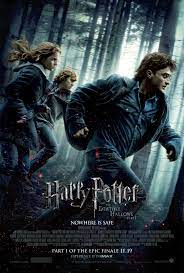
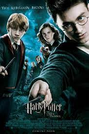
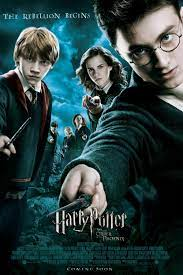

About
Harry James Potter is a fictional character and the titular protagonist in J. K. Rowling's series of eponymous novels. The majority of the books' plot covers seven years in the life of the orphan Harry, who, on his eleventh birthday, learns he is a wizard. Thus, he attends Hogwarts to practise magic under the guidance of the kindly headmaster Albus Dumbledore and other school professors along with his best friends Ron Weasley and Hermione Granger. Harry also discovers that he is already famous throughout the novel's magical community, and that his fate is tied with that of Lord Voldemort – the internationally feared Dark Wizard and murderer of his parents, James and Lily Potter. The book and film series revolve around Harry's struggle to adapt to the wizarding world and defeat Voldemort.
Harry is regarded as a fictional icon and has been described by many critics, readers, and audiences as one of the greatest literary and film characters of all time. He was portrayed by Daniel Radcliffe in all eight Harry Potter films from Philosopher's Stone (2001) to Deathly Hallows – Part 2 (2011).

Read more
Facts
*Harry Potter became the first and only known person to survive the Killing Curse.
On the fateful day of October 31, 1981, Lily Potter made a loving sacrifice to protect her son from Voldemort’s killing curse. Due to the incident, Voldemort accidentally made Harry into a Horcrux where a piece of his soul has been implanted.
Dumbledore's full name is Albus Percival Wulfric Brian Dumbledore.
Better known as simply Albus Dumbledore, the previous Headmaster of Hogwarts was in office for nearly 40 years. Sadly, he was not spared from the story as Severus Snape killed him. Dumbledore was buried in a white marble tomb on the Hogwarts grounds. All in all, Albus Dumbledore was considered as the most powerful wizard of his time.
Hermione Granger is the only girl of the Golden Trio.
Recognized as the brightest witch of her generation, Hermione Jean Granger was evidently brilliant, headstrong, and resourceful throughout the series. Harry considers her and Ron his closest friends regardless of her being a Muggle-born. Hence, Hermione is a living example of the misconception of pureblood wizard supremacy.
Ronald Weasley completes the Golden Trio.
Like his best friends Harry and Hermione, Ron Bilius Weasley is also of House Gryffindor. The tall, gangly, red-haired, and freckled lad met the other two at the Hogwarts Express in 1991. Ron is the youngest son of Arthur and Molly Weasley. Eventually, he married Hermione and had 2 children with her named Hugo and Rose.
See facts!


 
